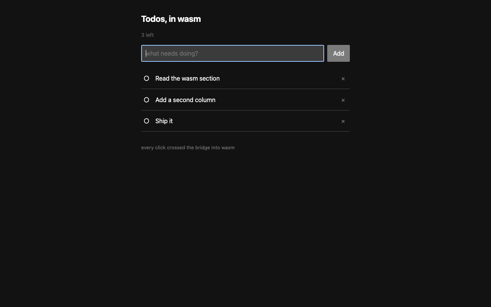

Web
A client-only page: the same views compiled to wasm.

examples/web — screenshot taken from webc dev.webc.json
{
"name": "web",
"mode": "web",
"target": "wasm",
"client": ["src/app.c"],
"dev": { "port": 9999 }
}src/app.c
// WebC — a todo list that lives entirely in the browser.
//
// This is the "no server half" shape: there is no routes file and no database,
// because nothing here needs one. `client_main` is the whole entry point, and the
// wasm module is the app. The server-rendered counterpart is examples/todo.
#include <webc/web.h>
#include <webc/host.h>
#include "notes.h"
static VecNote g_notes;
static i64 g_next_id = 1;
// The typed field, bound straight to a context field: no action, no signal —
// bind_ctx persists the text into `ui.draft` as the reader types, quietly. The view
// never draws the value back (a value attribute is only the default, and the browser
// owns the live one), so `add` clears the box through the same host the rest of the
// app uses for the document: field_value(), see <webc/host.h>.
typedef struct {
Text draft;
} Ui;
static Ui ui;
// ---------------------------------------------------------------- what a click does
action(add) {
if (!ui.draft || !*ui.draft) return;
push(g_notes, ((Note){.id = g_next_id++, .title = ui.draft}));
ui.draft = "";
field_value("draft", str_lit("")); // the box the reader typed into: theirs, not a render's
focus_hook("draft"); // ready for the next one, without a click
}
action(toggle, Note *n) {
n->done = !n->done;
}
action(remove, Note *n) {
for (i32 i = 0; i < vlen(&g_notes); i++)
if (vat(&g_notes, i).id == n->id) {
remove_at(g_notes, i);
break;
}
}
// ---------------------------------------------------------------- the view
static i64 left(void) {
i64 n = 0;
for_each(x, g_notes) if (!x->done) n++;
return n;
}
view(App) {
el("main") {
el("h1") { text("Todos, in wasm"); }
el("p") { class_("count"); text("%lld left", left()); }
el("form") { named("new");
el("input") { named_field("draft"); placeholder("what needs doing?"); }
el("button") { type_("button"); on_click(add); text("Add"); }
}
el("ul") {
for_each(n, g_notes) {
el("li") { class_(n->done ? "done" : "");
el("button") { class_("tick"); on_click(toggle); text(n->done ? "✓" : "○"); }
el("span") { text(n->title); }
el("button") { class_("x"); on_click(remove); text("×"); }
}
}
}
el("p") { class_("hint"); text("every click crossed the bridge into wasm"); }
}
}
// ---------------------------------------------------------------- the client half
//
// `webc dev` keeps the page and swaps the module on every save. Signals cross that swap
// by themselves; this example's `g_notes` is a plain vector, so a save starts the list
// over — an app that wants it kept defines `webc_dev_state_save()` and
// `webc_dev_state_load()` (see <webc/webc_dev.h>). They are dev-only and optional.
client_main {
mount(App, "#root");
bind_ctx("draft", ui, draft); // the input named_field("draft") in the view
bind("new", "submit", add); // Enter submits the form; the bridge owns the default
return 0; // the buttons wire themselves, in the view
}src/notes.h
// The client-only example's data: one model, one vector, nothing about a server.
#pragma once
#include <webc/web.h>
WEBC_MODEL(Note, (id, i64, .pk = true),
(title, Text, .required = true, .max = 200),
(done, bool))
Vec(Note)public/index.html
Not the app's code: this is the document webc new writes for a browser-only project. You edit the title and the stylesheet link; the mount point and WebC.start() are the scaffold's and stay as they are.
<!doctype html>
<html lang="en">
<head>
<meta charset="utf-8">
<meta name="viewport" content="width=device-width, initial-scale=1">
<title>WebC · todos, in wasm</title>
<link rel="stylesheet" href="/style.css">
</head>
<body>
<!-- the component renders here, from wasm; nothing on this page is server-rendered -->
<div id="root"></div>
<script src="/webc.js"></script>
<script>
(async () => {
await WebC.start({ el: '#root', wasm: '/app.wasm' });
})().catch((e) => {
document.querySelector('#root').textContent = 'wasm failed: ' + e.message;
console.error(e);
});
</script>
</body>
</html>public/style.css
:root { color-scheme: light dark; }
body { font: 16px/1.5 system-ui, sans-serif; margin: 2rem auto; max-width: 34rem; padding: 0 1rem; }
h1 { font-size: 1.4rem; letter-spacing: -0.01em; }
.count { color: #666; font-size: 0.85rem; margin: 0 0 1rem; }
form { display: flex; gap: 0.5rem; margin-bottom: 1rem; }
input[type=text], input:not([type]) { flex: 1; padding: 0.5rem 0.6rem; font: inherit; }
button { padding: 0.5rem 0.8rem; font: inherit; cursor: pointer; }
ul { list-style: none; padding: 0; }
li { display: flex; align-items: center; gap: 0.6rem; padding: 0.45rem 0; border-bottom: 1px solid #ddd4; }
li span { flex: 1; }
li.done span { text-decoration: line-through; opacity: 0.55; }
li .tick { border: 0; background: none; padding: 0.2rem 0.4rem; }
li .x { border: 0; background: none; opacity: 0.4; }
li .x:hover { opacity: 1; color: #c33; }
.hint { margin-top: 2rem; color: #777; font-size: 0.8rem; }